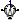
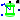
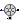
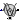

Sensors for machine modelling
Extends from Modelica.Icons.SensorsPackage (Icon for packages containing sensors).
| Name | Description |
|---|---|
| Length of space phasor -> RMS voltage | |
| CurrentQuasiRMSSensor | Length of space phasor -> RMS current |
| ElectricalPowerSensor | Instantaneous power from space phasors |
|  MechanicalPowerSensor | Mechanical power = torque x speed |
|  RotorDisplacementAngle | Rotor lagging angle |
|  HallSensor | Hall sensor |
|  SinCosResolver | Sin-Cos-Resolver |
 Modelica.Electrical.Machines.Sensors.VoltageQuasiRMSSensor
Modelica.Electrical.Machines.Sensors.VoltageQuasiRMSSensorLength of space phasor -> RMS voltage
Extends from Modelica.Icons.RoundSensor (Icon representing a round measurement device).
| Name | Description |
|---|---|
| V | [V] |
| plug_p | |
| plug_n |
Length of space phasor -> RMS current
Extends from Modelica.Icons.RoundSensor (Icon representing a round measurement device).
| Name | Description |
|---|---|
| I | [A] |
| plug_p | |
| plug_n |
Instantaneous power from space phasors
Extends from Modelica.Icons.RoundSensor (Icon representing a round measurement device).
| Name | Description |
|---|---|
| P | [W] |
| Q | [var] |
| plug_p | |
| plug_ni | |
| plug_nv |
Mechanical power = torque x speed
Extends from Modelica.Icons.RoundSensor (Icon representing a round measurement device), Modelica.Mechanics.Rotational.Interfaces.PartialTwoFlanges (Partial model for a component with two rotational 1-dim. shaft flanges).
| Name | Description |
|---|---|
| useSupport | Use support or fixed housing |
| Name | Description |
|---|---|
| flange_a | Flange of left shaft |
| flange_b | Flange of right shaft |
| P | [W] |
| support | Support at which the reaction torque is acting |
Rotor lagging angle
The sensor's housing can be implicitly fixed (useSupport=false).
If the machine's stator also implicitly fixed (useSupport=false), the angle at the flange
is equal to the angle of the machine's rotor against the stator.
Otherwise, the sensor's support has to be connected to the machine's support.
| Name | Description |
|---|---|
| m | Number of phases |
| p | Number of pole pairs |
| positiveRange | Use only positive output range, if true |
| threshold | Below threshold the voltage is considered as zero |
| useSupport | Use support or fixed housing |
| Name | Description |
|---|---|
| rotorDisplacementAngle | [rad] |
| plug_p | |
| plug_n | |
| flange | |
| support | Support at which the reaction torque is acting |
Hall sensor
Simple model of a hall sensor, i.e. measuring the angle of the flange (w.r.t. the optional support), multiplying by the number of phases p to obtain the electrical angle, and adding a correction term i.e. the initial angle of the flange phi0.
Note that phi0 has to be set that way, that in shaft position phi0 the flux linkage of phase 1 is a maximum.
Extends from Modelica.Mechanics.Rotational.Interfaces.PartialElementaryOneFlangeAndSupport2 (Partial model for a component with one rotational 1-dim. shaft flange and a support used for textual modeling, i.e., for elementary models).
| Name | Description |
|---|---|
| useSupport | = true, if support flange enabled, otherwise implicitly grounded |
| p | Number of pole pairs |
| phi0 | Initial mechanical angle [rad] |
| Name | Description |
|---|---|
| flange | Flange of shaft |
| support | Support/housing of component |
| y | "Electrical angle" [rad] |
Sin-Cos-Resolver
Simple model of a sin-cos-resolver, i.e. sensing the angle of the flange phi (w.r.t. the optional support) and multiplied by p, providing 4 signals:
y[1] = offset + amplitude*cos(p*(phi - phi0))y[2] = offset - amplitude*cos(p*(phi - phi0))y[3] = offset + amplitude*sin(p*(phi - phi0))y[4] = offset - amplitude*sin(p*(phi - phi0))
Thus the sine and cosine signals have p periods per mechanical revolution.
Adding an offset > amplitude, the loss of one track can be determined.
Subtracting the negated signal from the signal, the offset is removed and a cosine and a sine with doubled amplitude are accessible.
From this signal, the angle within one pole pair of a machine can be determined for field oriented control.
Block SinCosEvaluation can be used.
This model can be used to export FMUs of drives to develop control strategies in other environments. When switching to a real drive, the same inputs as from the FMU can be used.
Note that phi0 has to be set that way, that in shaft position phi0 the flux linkage of phase 1 is a maximum.
In order to sense the mechanical angle of the shaft p = 1 has to be set.
Extends from Modelica.Mechanics.Rotational.Interfaces.PartialElementaryOneFlangeAndSupport2 (Partial model for a component with one rotational 1-dim. shaft flange and a support used for textual modeling, i.e., for elementary models).
| Name | Description |
|---|---|
| useSupport | = true, if support flange enabled, otherwise implicitly grounded |
| p | Number of pole pairs |
| amplitude | Amplitude of signals |
| offset | Offset of signals |
| phi0 | Initial mechanical angle [rad] |
| Name | Description |
|---|---|
| flange | Flange of shaft |
| support | Support/housing of component |
| y[4] | Track signals |